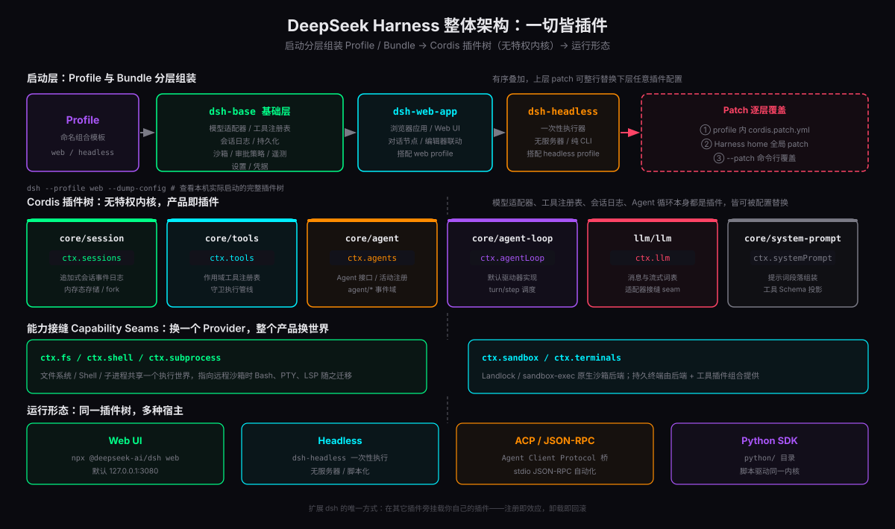
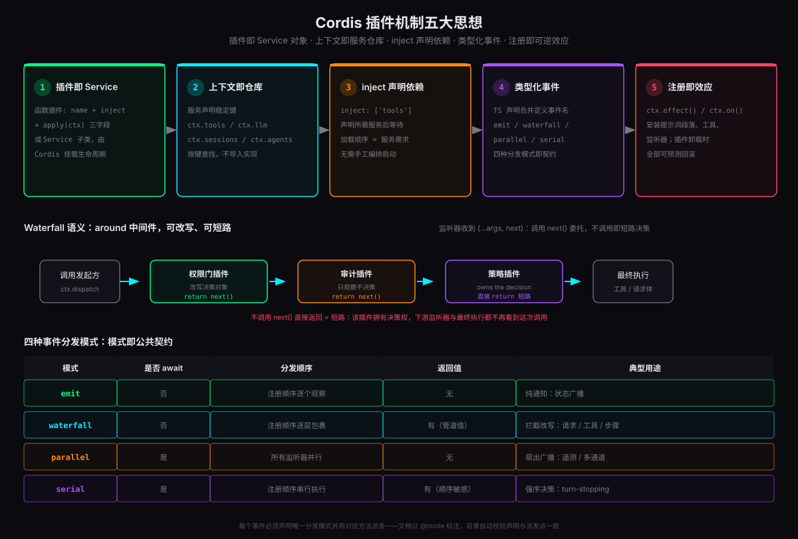
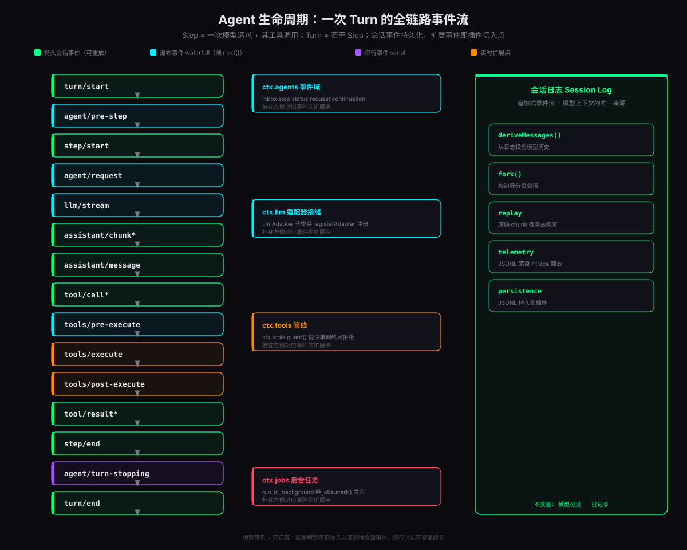

2026 年的 Agent 框架赛道挤满了「内核 + 插件」的设计：核心循环写死在框架里，插件只能在边缘挂一点工具和提示词。DeepSeek 开源的 DeepSeek Harness（命令行叫 dsh）走了一条极端路线——没有内核。模型适配器是插件，工具注册表是插件，会话日志是插件，连 Agent 循环本身都是插件。你可以从配置文件里把官方实现整行替换成自己的版本，框架对此没有任何怨言。
这种「一切皆插件」（everything is a plugin）的架构不是营销话术，而是一套可验证的工程主张：仓库文档里有一张「产品特性 → 插件机制」的映射表，每一行产品功能都对应某个已文档化扩展点上的监听器，没有一行直接修改循环。支撑这一切的底座是 Cordis——一个把「时空可组合性」当作第一性原理的插件框架，其设计思想写在论文《A Programming Paradigm for Spatiotemporal Composability》里。
本文按四层展开：先看整体架构怎么分层组装，再拆 Cordis 插件机制的五个核心概念与四种事件分发模式，然后走一遍 Agent 生命周期的全链路事件流，最后落到工具插件与 Hook 插件的完整技术契约，以及从零扩展一个 dsh 的实战路径。
整体架构：一切皆插件
一个正在运行的 dsh 进程，本质上是一棵启动时装配出来的 Cordis 插件树。装配不是写代码，而是分层叠加配置。
Profile 与 Bundle：配置层的乐高
dsh 用两个概念管理组装：
- Profile（画像）：一个命名组合模板，存放在 Harness home 目录。它声明自己堆叠哪些 bundle、持有哪些目录外的第三方插件，还保留用户自己的
cordis.patch.yml补丁。官方内置web和headless两个模板。 - Bundle（捆）：Cordis 配置行及其所挂载代码的分发格式。bundle 插入的任何配置行，仍然可以被它上层的 patch 覆盖——分发与定制不冲突。
两者都在各自 package.json 的 dsh 字段里自我声明：dsh.profile 列出 profile 堆叠的 bundle 列表，dsh.bundle 指向 bundle 的 patch 文件。
三层 bundle：base、web、headless
| Bundle | 职责 | 搭配 Profile |
|---|---|---|
| dsh-base | 所有 profile 的第一层：模型适配器、工具、持久化、沙箱与审批策略、设置、凭据、遥测 | web / headless |
| dsh-web-app | 浏览器应用与 Web UI、对话节点、编辑器联动 | web |
| dsh-headless | 一次性执行器，无服务器、纯 CLI | headless |
装配顺序严格确定：profile 列出的 bundle 按声明顺序依次应用到空列表上，然后叠加 profile 自己的 cordis.patch.yml，再叠加 home 级补丁，最后是命令行 --patch 覆盖。补丁按 id 定位目标行，整行替换其配置，或插入全新行。想看你的机器实际启动了哪棵树：
核心包与稳定的服务键
插件树上的核心包各自贡献一个稳定的服务键，插件之间不 import 实现，只按键查找：
| 核心包 | 拥有什么 | 服务键 |
|---|---|---|
| core/session | 追加式 SessionEvent 日志与内存存储 | ctx.sessions |
| core/system-prompt | 提示词段落与工具 schema 的装配 | ctx.systemPrompt |
| core/tools | 作用域工具注册表与受守卫的执行管线 | ctx.tools |
| core/agent | Agent 接口、活动注册表与 agent/* 事件 | ctx.agents |
| core/agent-loop | 实现该接口的默认驱动器 | ctx.agentLoop |
| llm/llm | 消息与流式词汇表 + 模型适配器接缝 | ctx.llm |
core/agent-loop（Agent 循环的默认实现）都是插件。理论上你可以写一个自己的循环驱动器，用配置补丁把官方实现整行换掉——这就是「没有特权内核」的字面意思。
插件系统底座：Cordis 五大核心
Cordis 是 dsh 脚下的框架。官方文档的表述很精确：插件向共享上下文贡献服务、类型化事件、可逆效应。拆开看是五个环环相扣的核心概念。

一个插件的最小形状
函数插件只有三个字段，这是 Cordis 世界的 Hello World：
也可以写成 Service 子类，由 Cordis 挂载完整生命周期。两种形态等价，函数形态覆盖绝大多数场景。
核心一：插件即 Service
插件不是一个「挂件」，而是一个服务单元。它的生命周期由 Cordis 管理：挂载时执行 apply(ctx)，卸载时自动撤销 apply 里做过的所有事。插件可以随时被加载、被替换、被卸载——这就是「时空可组合性」里的时间维度。
核心二：上下文即仓库
每个插件拿到自己的 ctx，而 ctx 树是一个服务仓库：服务用稳定键声明（ctx.tools、ctx.llm、ctx.sessions、ctx.agents……），消费方按键查找，从不 import 具体实现。这带来一个直接后果：任何服务的实现都可以被另一个插件替换，消费方代码一行不改。
核心三：inject 声明依赖
inject: ['tools'] 不是装饰性注释，而是加载顺序的编排依据。Cordis 看到这个声明，会等 tools 服务就绪后再挂载你的插件。整棵插件树的加载顺序由所有插件的 inject 声明自动推导，不需要任何手工编排的启动序列——这是依赖注入在插件系统里的完全体。
核心四：类型化事件
插件之间通过类型化事件协作。事件名和载荷用 TypeScript 声明合并（declaration merging）定义在 Events 接口上，监听器签名由编译器检查。事件不是字符串魔法，而是编译期契约——拼错事件名、载荷类型不匹配，都会在构建时报错，而不是运行时静默失败。
核心五：注册即效应
这是整个架构的灵魂。插件在 apply 里做的一切——注册工具、安装提示词段落、监听事件——都通过 ctx.effect() / ctx.on() 登记为可逆副作用。插件卸载（dispose）时，这些副作用按注册的逆序全部回滚：
- 注册过的工具自动注销，模型不再看到它
- 安装过的提示词段落自动拆除
- 监听中的事件自动解绑
四种事件分发模式与短路语义
类型化事件怎么分发，决定了插件间协作的表达力。Cordis 提供四种分发模式，每种语义精确对应一类协作场景：
(...args, next)，上一个的产出作为下一个的输入，可改写、可短路。适合拦截决策：权限、改写、拒绝。waterfall：around 中间件，可改写、可短路
waterfall 是表达力最强的一种，语义类似 Koa 的中间件：监听器可以选择调用 next() 把调用委托给下游，也可以不调用 next() 直接返回——这就是短路，意味着「这次调用到此为止，我的返回值就是最终结果」。
以工具执行前的 tools/pre-execute 瀑布为例，三个插件排成一条链：
短路语义的精妙之处在于决策权的显式化：一个插件返回什么类型，就宣称自己拥有什么决策权。PreToolDecision 的 allow / deny / ask 是类型系统的产物，不是靠约定字符串。而 agent/turn-stopping 用的是 serial——它没有 next()，监听器按序执行完，回合才真正收束，因为收尾逻辑天然需要强序。
Agent 生命周期：一次 Turn 的全链路事件流
dsh 的 Agent 循环用两个时间单位组织：Step 是一次模型请求加上它引发的所有工具调用；Turn 是零到多个 Step，在第一份输入被认领前开启，在「不再欠任何一方任何东西」时闭合。把生命周期摊开，是 15 个事件的接力：

事件的三种身份
这 15 个事件不是同质的，按身份分三类，选错类别是扩展 dsh 时最常见的错误：
| 类别 | 事件 | 语义 |
|---|---|---|
| 持久会话事件 | turn/* · step/* · user/message · assistant/* · tool/* | 追加到会话日志的持久事实，重载后仍存在，经 session/event 广播 |
| Agent 事件 | agent/pre-step · agent/request · agent/turn-stopping | 携带活动 Agent 的实时事件：收件箱、步骤、状态、请求 |
| 能力事件 | llm/stream · tools/* · fs/* · telemetry/* | 往接缝上挂策略与适配器，不 import 循环本身 |
其中 agent/pre-step、agent/request、llm/stream 和三个 tools/* 事件是 waterfall（必须调 next() 委托），agent/turn-stopping 是 serial（无 next()）。
收件箱与 pre-step：模型看到什么，插件说了算
所有输入通过单一收件箱到达驱动器：有的消息立刻唤醒 Agent，注入的上下文则在收件箱里安静排队，直到下一条消息到来。agent/pre-step 决定模型看到什么——监听器可以改写认领到的消息，也可以直接拒绝。一个耐人寻味的细节：被拒绝的、或首条消息被改写为空的首个回合，仍然会以一个「没花任何 step 的 durable turn」闭合——日志必须记录这次尝试，哪怕模型根本没被调用。
会话日志：模型上下文的唯一来源
右侧的会话日志（Session Log）是整个架构的支点。deriveMessages() 从日志投影出模型历史；原始的 assistant/chunk 事件逐块保存流式增量，保证重放与 UI 保真；fork、resume、transcript、遥测、持久化，全部从这一条事件流派生。
SessionEventMap，新增一种会话事件，从日志渲染。直接往请求里塞字段的路被架构性封死了。
技术实现：工具插件的完整契约
工具是插件系统里最高频的扩展形态。dsh 用一个 defineTool 帮手把「模型可见的契约」收进类型系统：
注册即效应：销毁插件纤程即注销工具。schema 自动流入系统提示词装配，模型由此得知工具的存在。这份契约有五条铁律，每条都在解决一类真实的工程事故：
defineTool 在 execute 运行前，就用统一的 ParameterSchemaSpec 校验模型生成的 arguments：类型、必填键、字面量约束、exact-one 联合、嵌套值，全部过关才进入执行。DSL 表达不了的约束（非空字符串、正数、跨字段规则）仍需手工检查。直接注册原始 JSON-Schema 的工具（MCP 来源的工具就是这样进来的）则自己负责输入校验。schemas() 只物化显式的模型侧投影。arguments 物化为脱离原引用的无损 JSON（一次递归遍历完成），在策略启动前冻结，并分配不透明的 exec.token。callId、name、arguments、agent、token、signal 在整个分发过程中不可变。唯一例外：around 分发包装器拿到的是可变视图，可以替换并恢复 exec.signal 来施加截止时间，但不能删除它。output.schema 用 ValueSchemaSpec，根可以是对象、数组、标量或 null。execute 只返回推导类型的值；注册表将其快照为无损 JSON、校验、冻结，再交给 output.render(args, value)。不要从执行体里返回内容块，也不要让调用方解析散文来找 id——结构化数据走规范值，呈现走 render。工具执行管线：五层各司其职
一次工具调用从模型发出到结果落日志，经过一条五层管线。dsh 文档给出了精确的选型规则——用错层是最常见的集成错误：
此外还有两个不走管线的闸门：ctx.tools.guard() 提供单调终局拒绝（一旦 guard 拒绝，后续任何插件都翻不了案）；ctx.tools.restrict() 做对齐的可见集过滤——工具搜索、渐进披露这类「可见工具集动态变化」的场景用它，注册表会同时保持呈现、查找、执行三处对齐。
Hook 插件：可重排的策略层
权限门禁是 Hook 插件的教科书案例。完整代码不到 20 行：
这条 waterfall 是一个可重排的策略层：多个门禁插件各自监听同一事件，注册顺序决定优先级，每个插件都可以改写决策对象后放行，也可以直接返回类型化决策短路。所谓「原生 Hook」就是拦截点上的普通 Cordis 插件，不需要任何外部协议。
审批闭环是这套设计的点睛之笔：门禁返回 { kind: 'ask' }，问题经 ctx.approval 送达用户，用户的回答回流为最终决策——AskUserQuestion 交互、权限系统全部建立在这一个机制上。而需要「单调终局拒绝」的不变量（比如沙箱硬边界）则绕过 waterfall，直接用 ctx.tools.guard()，保证任何插件都无法翻转。
app.use 顺序堆叠，决策是隐式的、无类型的；dsh 的 Hook 靠事件系统组织，决策是类型化的显式返回值，且生命周期跟随插件——插件卸载，Hook 自动摘除。你可以给同一个项目同时装三个来源的权限策略，它们天然可组合、可重排、可整体替换。
实战：从零扩展一个 dsh
下面五个实战由浅入深，覆盖从跑起来到深度定制的完整路径。dsh 目前处于 developer preview 阶段（官方明确会有破坏性变更），以下 API 以仓库 master 分支为准。
dump-config 打印的每一行都能被你的补丁按 id 替换。把输出存下来，是理解「我这台机器上 dsh 到底由什么组成」的最快方式——也是后续所有定制操作的地图。
直接使用上文 defineTool 的完整模板。三个工程要点：
- 长任务用
run_in_background模式：经ctx.jobs.start()发布为后台任务，模型用job_*工具收集或停止它，而不是阻塞一个 step - 把
exec.signal传给所有异步操作，让取消能够传导到 I/O 层 - 参考实现看
packages/shell/tool-bash——官方称它是「生产级三包示例」，参数 schema、输出规范、后台执行一应俱全
组织级不变量（如「生产目录只读」）再加一道 ctx.tools.guard() 单调终局拒绝，任何插件都无法翻转。能力级拒绝放 pre-execute，进程级隔离交给 ctx.sandbox 后端（官方 dsh-bash-sandbox 用 landlock / sandbox-exec 实现）。
补丁机制是「没有特权内核」的兑现方式：按 id 定位 dump-config 输出中的任意一行，整行替换其配置，或插入全新行。典型用法：
- 换掉默认的持久化插件，指向自己的存储
- 给
ctx.llm换一个自建模型网关的适配器 - 在
dsh-base之上插入公司内部的审批策略插件行
覆盖顺序是：bundle（按 profile 声明序）→ profile 级 cordis.patch.yml → home 级 → 命令行 --patch。所有配置字段的权威说明在仓库的 config catalog 文档里。
MCP 在 dsh 里的实现方式出乎意料地朴素：每个 MCP server 一个插件——发现工具，然后逐个 ctx.tools.register()。MCP 工具以原始 JSON-Schema ToolDefinition 注册（这就是它们需要自管输入校验的原因），与第一方 defineTool 工具在同一注册表中平起平坐。
接自定义模型则走 ctx.llm 接缝：写一个 LlmAdapter 子类，经 registerAdapter 注册（官方 dsh-llm-deepseek、dsh-llm-pi-ai 就是这么做的）。循环、工具、UI 全部不用动。
调试与可观测
遥测走同一条会话事件流：session/event 落 JSONL；回放 = sessions.create(id, { seed })。因为原始 chunk 全量在日志里，回放是逐比特保真的——UI 长什么样、模型看到了什么，事后都能完整复现。想分叉一个会话做对照实验，ctx.sessions.fork(source, boundary?) 按边界复制。
能力接缝：一次换动，全局生效
「一切皆插件」的深层价值，体现在 dsh 文档所谓的能力接缝（capability seam）上。一条接缝由三种角色构成，缺一不可：
一个包可以同时扮演多种角色，但只有一种角色不构成接缝；新增一个能力，意味着三种角色都要设计。接缝的威力在于一次换动，全局生效：文件系统与子进程提供者共享同一个执行世界，把二者指向一个远程沙箱后端，Bash、PTY、LSP 就整体迁移过去了——没有任何一个工具需要 fork 出「远程版」。子 Agent 的提供者谱系更宽：从全新子进程 Agent 到委托给另一个产品的一个回合，藏在同一个接口后面。
回看那张「产品特性 → 插件机制」映射表，每个特性都是某个扩展点上的监听器，没有一行直接改循环：Hook 系统桥接 Claude Code / Codex 的配置文件（dsh-hooks-claude-code / dsh-hooks-codex），上下文压缩走 ctx.compaction 接缝（自动压缩在 serial 的 agent/pre-step 上由压力触发），系统提示词用 ctx.systemPrompt.section() 分段落装配，定时任务在计时器触发时以 {source: {kind: 'cron'}} 的身份 followup()——微内核的主张由此变成可审计的清单，而不是架构图上的口号。
总结：什么时候该认真看 dsh
把 dsh 的插件设计压缩成三个可迁移的洞见：
- 可逆性先于功能性。「注册即效应」让加载与卸载对称，热重载、A/B 换实现、故障回滚全部免费。任何插件系统在设计第一天的第一问应该是：这个操作怎么撤销？
- 事件分发模式就是协作语法。emit / waterfall / parallel / serial 四种模式各对应一类协作，类型化决策让「谁拥有决定权」显式化——这比任何权限文档都可靠。
- 持久化的事实只有一个来源。「模型可见 = 已记录」把上下文、遥测、重放、分叉统一到一条追加式事件流上，消灭了一整类「内存态与日志不一致」的 bug。
- 需要把 Agent 嵌进自己的产品，且要控制模型接入、工具集、权限策略的每一层
- 团队要给同一个 Agent 叠加多个来源的策略（安全、审计、合规），且策略必须可组合可回滚
- 对会话的可回放性、可分叉性有硬需求（评测、对照实验、事后审计）
- 能接受 developer preview 阶段的破坏性变更，愿意跟 master 演进
如果只是想要一个开箱即用的编码助手，dsh 的极致可拆卸反而是负担；但如果你在构建自己的 Agent 平台，dsh 是目前把「插件化」推进到哲学高度、又用类型系统和不变量把它约束成工程实践的最佳样本——毕竟，能被配置文件整体替换的 Agent 循环，市面上独此一家。
参考资料
- deepseek-ai · DeepSeek Harness 仓库（README、开发者预览声明、运行方式） github.com/deepseek-ai/deepseek-harness
- deepseek-harness · docs/architecture.md（Cordis、Profiles 与 Bundles、核心包、事件、Turn Flow、接缝） docs/architecture.md
- deepseek-harness · docs/cookbook/extension-cookbook.md（工具/Hook/UI/协议驱动插件模式与特性映射表） extension-cookbook.md
- deepseek-harness · docs/cookbook/adding-a-tool.md（工具契约五条铁律与执行身份保护） adding-a-tool.md
- cordiverse · Cordis 与《A Programming Paradigm for Spatiotemporal Composability》论文 github.com/cordiverse/paper
- deepseek-harness · docs/cordis-primer.md（Cordis 入门指南） docs/cordis-primer.md